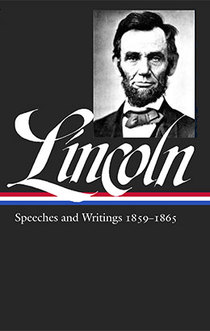
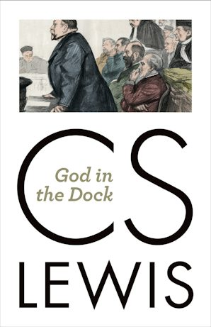
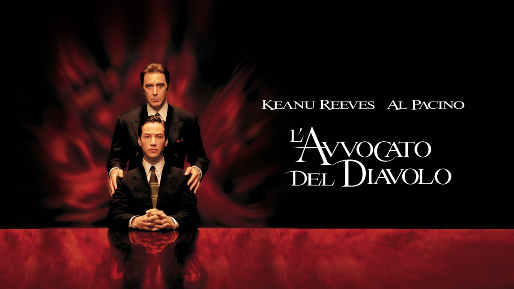
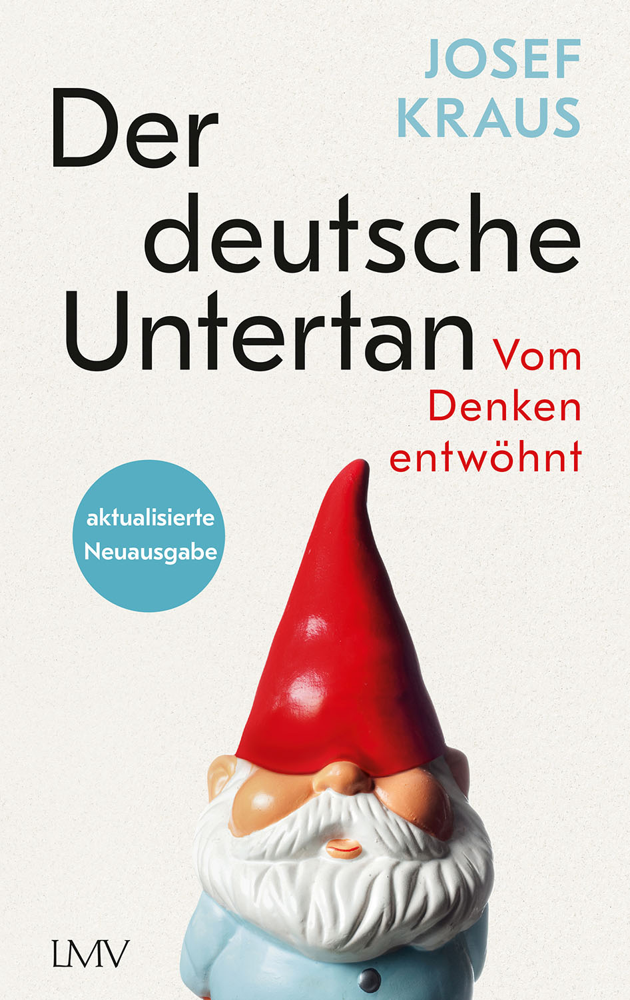
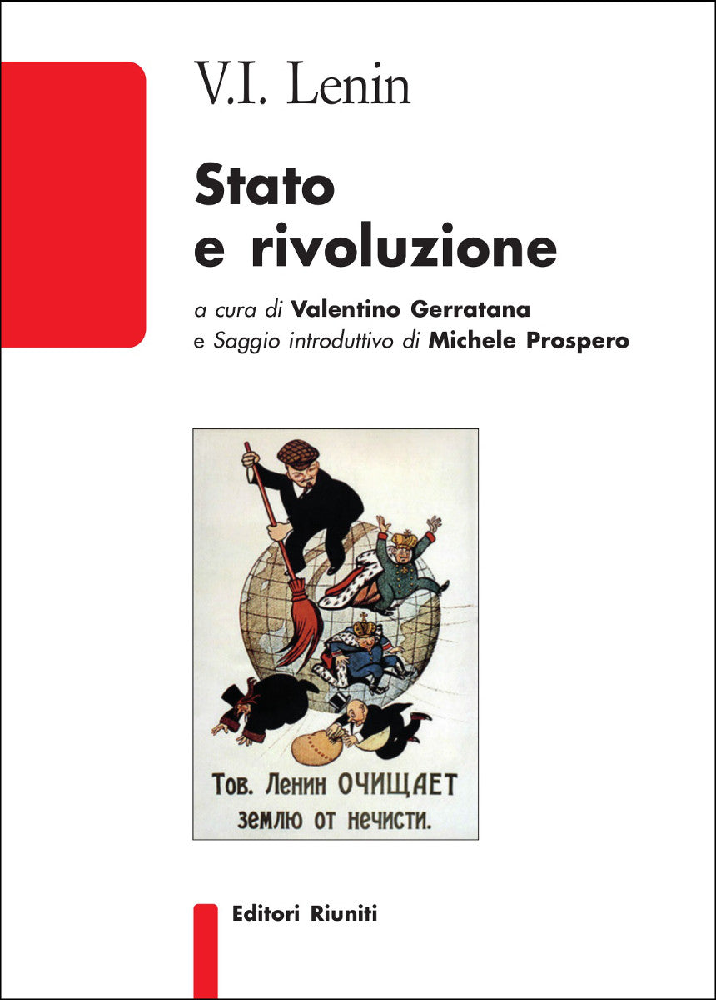

32:39 · 10 OPERE
Per carità, non si invochi la libertà.
Il filo del discorso
Nel contributo, datato dal relatore 6 settembre 2021, Dr Divago contesta la dichiarazione pronunciata il giorno precedente da Sergio Mattarella sulla vaccinazione e il ricorso alla libertà personale. Il confronto con la Costituzione e con una frase antischiavista di Lincoln alimenta una critica più ampia al linguaggio dell’emergenza e all’autorità degli esperti. L’intervista di Gustavo Zagrebelsky sui decreti e l’obiezione di Antonio Baldassarre vengono usate per opporre un ragionamento spiegato a una risposta che il relatore giudica fondata sul prestigio di chi parla. Il discorso passa poi alle immagini di propaganda, alla promessa di tornare alla vita normale e alla metafora del bastone e della carota. Lewis è evocato per il rischio di un potere coercitivo convinto di fare il bene; Churchill per la pressione nazista sull’Austria. Nella rassegna della stampa, Dr Divago legge fotografie e titoli come strumenti di legittimazione o delegittimazione e prevede l’emarginazione di chi dissentirà. La segnalazione di Der deutsche Untertan di Josef Kraus collega questi temi all’abitudine all’obbedienza. Nel finale, Heinlein, Washington e Lenin sostengono tre formule diverse su pace, parola e libertà. La scheda attribuisce al relatore i giudizi politici, ricolloca gli aforismi nelle rispettive fonti e distingue la critica delle misure dalle conclusioni mediche o costituzionali che i soli titoli di giornale non dimostrano.
I libri nel discorso

Lettera a Henry L. Pierce e altri, 6 aprile 1859
Identificazione probabile
Copertina della raccolta: COPERTINA DELLA RACCOLTA Abraham Lincoln: Speeches and Writings 1859–1865, Library of America 46, a cura di Don E. Fehrenbacher, 788 pagine, ISBN 9780940450639. La lettera compare nell’indice alle pp.18–19. Non si identifica questa raccolta con le opere complete mostrate dal relatore.
Immagine ufficiale intera con ritratto di Lincoln, titolo e intervallo 1859–1865. La lettera tratta Jefferson, partiti e schiavitù: il collegamento alla vaccinazione è un uso successivo del relatore.
Lincoln, frase su chi nega la libertà agli altri; testo datato 6 aprile 1859 individuato, titolo non pronunciato.
Passaggio 4:58 ↗ · Fonti e libro ↗
Costituzione della Repubblica Italiana
Copertina dell’edizione Intra aggiornata al 2023: Intra · 2023 · introduzione di Umberto Vincenti
Copertina autentica del testo integrale, aggiornata alla legge costituzionale 26 settembre 2023 n.1. È successiva al filmato del 2019 e non rappresenta la versione storica letta dal relatore. Umberto Vincenti firma l’introduzione. I tentativi di acquisire PDF istituzionali hanno restituito HTTP 403: nessun PDF o frontespizio è simulato come scaricato.
Articolo 13 esplicitamente accostato alla dichiarazione di Mattarella; seguono articoli 9 e 3.
Passaggio 4:26 ↗ · Fonti e libro ↗
The Humanitarian Theory of Punishment
Identificazione probabile
Copertina della raccolta: COPERTINA DELLA RACCOLTA God in the Dock, Eerdmans, 15 settembre 2014, 409 pagine, ISBN 9780802871831. Raccolta curata da Walter Hooper, pubblicata originariamente nel 1970; il saggio apparve nel 1949 e occupa le pp. 287–294 della prima raccolta. Copertina bianca con autore in grandi caratteri e scena giudiziaria.
Copertina ufficiale del volume che contiene il saggio, non una pubblicazione autonoma del 1949. Contesto della citazione: rapporto fra pena, merito, terapia e potere coercitivo; l’applicazione sanitaria è del relatore.
Lewis e la tirannia sincera per il bene delle vittime; passo localizzato nel saggio sulla pena, titolo non pronunciato.
Passaggio 19:35 ↗ · Fonti e libro ↗Step by Step, 1936–1939
Identificazione probabile
Copertina: Thornton Butterworth, Londra,1939; il testo digitalizzato riporta prima pubblicazione e seconda impressione nel giugno 1939. Copertina della legatura nera con titolo 1936–1939 e nome Winston S.Churchill, fornita dall’edizione digitale Faded Page 20230924, da immagini Internet Archive. Non è una sovraccoperta illustrata né un frontespizio; nessun ISBN per l’edizione storica.
Legatura storica intera con titolo e autore leggibili, ispezionata senza ricostruzione. L’intervento del 6 luglio 1938 si trova nell’indice a p.259. Non si stabilisce qui la prima attestazione assoluta dell’espressione bastone e carota.
Churchill, asino austriaco e carro nazista; passo The Rape of Austria,6 luglio 1938, volume 1939.
Passaggio 23:04 ↗ · Fonti e libro ↗
Divina Commedia
Identificazione probabile
Copertina: Giunti Barbera · Passepartout, 2021 · edizione di riferimento
Lasciate ogni speranza, allusione alla porta dell’Inferno, cantoIII.
Passaggio 26:18 ↗ · Fonti e libro ↗
L’avvocato del diavolo (The Devil’s Advocate)
Immagine promozionale del film: IMMAGINE PROMOZIONALE del film 1997 distribuito da Warner Bros.,regia Taylor Hackford,con Keanu Reeves,Al Pacino e Charlize Theron. Immagine del catalogo Apple TV con i due protagonisti e titolo italiano; non una copertina di romanzo o un fotogramma della scena descritta.
Visionata l’immagine intera nera e rossa con Reeves e Pacino e il titolo L’avvocato del diavolo. Le diverse durate delle schede di distribuzione non sono usate per identificare il montaggio guardato dal relatore.
The Devil’s Advocate e L’avvocato del diavolo, film con Al Pacino, titoli espliciti.
Passaggio 26:47 ↗ · Fonti e libro ↗
Der deutsche Untertan. Vom Denken entwöhnt
Identificazione probabile
Copertina: RISTAMPA SUCCESSIVA AL VIDEO: Langen Müller, aktualisierte Neuausgabe,20 settembre 2023,360 pagine,ISBN 9783784437019. Copertina con nano dal cappello rosso e indicazione aktualisierte Neuausgabe. Il negozio Achgut associa erroneamente dati 2021 e 352 pagine a questo ISBN; si conservano invece i dati 2023 riscontrati da DNB e Thalia. Opera originale 2021.
Immagine della nuova edizione 2023, dichiarata successiva al contributo: non usata come prova dell’esemplare mostrato nel 2021. Il titolo identifica una tesi polemica dell’autore e non una caratteristica psicologica accertata di tutti i tedeschi.
Il suddito tedesco, titolo riferito a un libro appena uscito: identificazione probabile di Josef Kraus 2021.
Passaggio 29:44 ↗ · Fonti e libro ↗Time Enough for Love (Tempo per amare)
Identificazione probabile
Copertina: Ace, paperback del 5 ottobre 2021, 640 pagine, ISBN 9780593437247. Copertina ufficiale nera con autore in giallo e titolo azzurro. Opera originale del 1973; l’edizione illustrata è successiva al contributo del 6 settembre 2021 e non è attribuita al video.
Acquisita la copertina intera dal collegamento cover dell’editore. L’immagine sociale iniziale mostrava un libro su uno sfondo più largo ed è stata sostituita; nessun ritaglio, ingrandimento o ricostruzione.
Robert Heinlein e la massima su pace e libertà, localizzata in Time Enough for Love, Intermission.
Passaggio 30:45 ↗ · Fonti e libro ↗Discorso agli ufficiali dell’esercito, 15 marzo 1783
Identificazione probabile
Copertina della raccolta: COPERTINA DELLA RACCOLTA George Washington: Writings, Library of America 91, a cura di John Rhodehamel, 1172 pagine, ISBN 9781883011239. L’indice comprende Speech to the Officers of the Army, March 15,1783. Copertina con Washington in uniforme davanti al cavallo; non è la riproduzione del manoscritto.
Titolo, autore e provenienza della copertina riscontrati. Il discorso difendeva la possibilità di esprimersi ma respingeva l’ammutinamento contro il Congresso; non è una licenza generale a disobbedire a ogni norma.
George Washington: parola e pecore al macello, passo del discorso di Newburgh 15 marzo 1783.
Passaggio 31:29 ↗ · Fonti e libro ↗
Stato e rivoluzione
Identificazione probabile
Copertina: Editori Riuniti,2021,316 pagine,a cura di Valentino Gerratana,saggio introduttivo di Michele Prospero,ISBN 9788835982043. Copertina bianca e rossa con caricatura politica di Lenin sul globo. Testo originale 1917; non è identificata l’edizione usata dal relatore.
Immagine autentica dell’opera, controllata visivamente; l’edizione di riferimento non è attribuita al filmato.
Lenin, libertà nelle società capitalistiche e repubbliche greche dei proprietari di schiavi, capitoloV sezione 2.
Passaggio 32:07 ↗ · Fonti e libro ↗